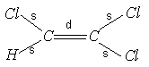

鹿島 久嗣 (かしま ひさし) の 研究紹介

| ごあいさつ | プロフィール | 研究紹介 | 研究業績 | 教育 | 研究日記 |
私は、人工知能の一分野である、機械学習と呼ばれる技術の研究を行っています。
機械学習とは、「経験から学習するコンピュータ・プログラム」をつくることを目的とした研究分野で、狭義には、過去のデータを解析し、隠れた規則性をみつけ、未来を予測するルールを獲得することを目指します。
私は、より多くの場面において機械学習技術を利用できるようにすることを目指し、従来の機械学習アルゴリズムがうまく扱えなかったタイプのデータ構造や、従来目的としてこなかったタイプの問題をうまく扱えるように、あるいは効率的に扱えるように拡張する研究を行っています。
産業やビジネスの現場で直面する様々な実世界の問題を機械学習を用いたデータ解析によって解決することにも興味をもっています。
また最近では、コンピュータだけ、人間だけでは十分に解決できない複雑な問題に対して、コンピュータと人間の両者を組み合わせて解決を図るヒューマンコンピュテーションという考え方に注目しています。 そして多くの人を計算に取り込むための仕組みとして、不特定多数の人間に作業を依頼するクラウドソーシングにも興味を持っています。 不特定多数の人間を構成要素として含むヒューマンコンピュテーションシステムでは、作業の統合や人間の不確実性等を適切に扱うための仕組みが必須となりますが、 そこに機械学習技術を利用できると考え研究を進めています。
構造データ（グラフとネットワーク）の機械学習
私が、とくに興味を持っているのは、構造をもつデータを対象とした機械学習を行うアルゴリズムです。
従来、機械学習アルゴリズムは、扱うことのできるデータの形式はベクトル形式、すなわち（身長=175cm、体重=67kg、性別=男）などのように一定数の決まった項目が並んでいる特徴ベクトルと呼ばれるデータ形式を仮定してきました。
しかしながら、近年これらの枠では捉えられないデータが増加しています。
例えば、テキストデータやDNAなどは、文字が並んだ配列構造データとして、この文書のようなHTMLデータ、あるいはXMLデータはタグの包含関係を示した木構造データとして、また、化合物などの構造などは原子とそれを結ぶ共有結合を表したグラフ構造データとして表現されます。 これらは、データの内部に構造があるような例です。 一方、インターネットやソーシャルネットワーク、あるいは、タンパク質の相互作用ネットワークなどは、データとデータのつながりを表したネットワーク構造をもっています。 これらは、データの外部に構造があるような例です。
従来の機械学習アルゴリズムはこのような、データ内外の「構造」をもったようなデータをそのまま扱えるようには設計されていませんでした。
私は、機械学習アルゴリズムが、構造を持ったデータをうまく扱うことができるようにすることを目指した研究を行っています。
(配列構造、木構造、グラフ構造； 従来の機械学習法では扱いが困難でした)
内部構造の学習
配列、木、グラフなどの内部構造を扱う学習を行うための代表的な考え方は、構造データの部分構造を用いて特徴ベクトルを構成することです。
しかし、部分構造の数は非常に多く、これを単純に列挙するのは莫大な計算コストを必要としてしまいます。
この問題に対処する方法としては、構造パターンマイニングと構造カーネル法という2つのアプローチがあります。 特に、構造カーネル法では、データ同士の類似度として、カーネル関数と呼ばれる類似度関数をうまく設計してやれば、既存の機械学習アルゴリズムのほとんどの枠組みをそのまま流用できるという利点があります。 私は、構造データの構造の特徴をうまく捉え、かつ、効率的に計算できる具体的なカーネル関数の設計を行いました。 これまでに、グラフカーネルや、順序木カーネルといったカーネル関数の提案を行っています。 これらは、現在では、構造データを扱うための標準的な手法のひとつとして認識されるに到っています。
（化合物のグラフ構造表現； 化合物の自動スクリーニングが可能になります）
外部構造の学習
ソーシャルネットワークやタンパク質の相互作用ネットワークなどの、データ間の関係を表すネットワーク構造は、データの外側の構造、つまり、外部構造ということができます。 ネットワーク上での学習問題には、ノードの分類やクラスタリングなどの標準的なタスクもありますが、特に、ネットワーク固有のタスクとしては、ネットワーク構造自体の予測、言い換えれば、データ間の関係の予測があります。 これは、非常に重要な問題であるものの、「データ間の関係」の数は「データ」の数よりも遥かに大きいため、大規模なネットワーク構造の予測は非常に難しい問題です。
そこで、私は、大規模なネットワーク構造を高精度で効率的に予測するための研究を行っています。
 （ソーシャルネットワークのネットワーク構造表現； キーパーソンの発見や、所属コミュニティや商品の推薦が可能になります）
（ソーシャルネットワークのネットワーク構造表現； キーパーソンの発見や、所属コミュニティや商品の推薦が可能になります）
私がこれまでに行った構造データに関する研究を含む紹介は、こちらにもあります。
そのほかの興味
そのほか、予測結果のもたらすコストを考慮した学習（コスト考慮型学習）や、データの中から他とは異なる異常な値を発見する異常検出／外れ値検出などの、様々な機械学習問題に対する新しい手法の開発や、機械学習問題に付随して起こる最適化問題を効率よく解くための最適化アルゴリズムの開発にも興味をもっています。
また、最近ではクラウドソーシングやヒューマンコンピュテーションといった、機械と人間による協調問題解決における機械学習的な側面に強い興味を持っています。
機械学習の応用
機械学習を現実世界の問題へ応用することにも興味をもっています。 たとえば、
などへの応用に興味をもっています。
また、学会などの主催するデータマイニングコンペティションなどへの参加も積極的に行っています。
私が過去に関わった研究に関する紹介は、こちらにもあります。
また、若干盛り気味の紹介記事も：